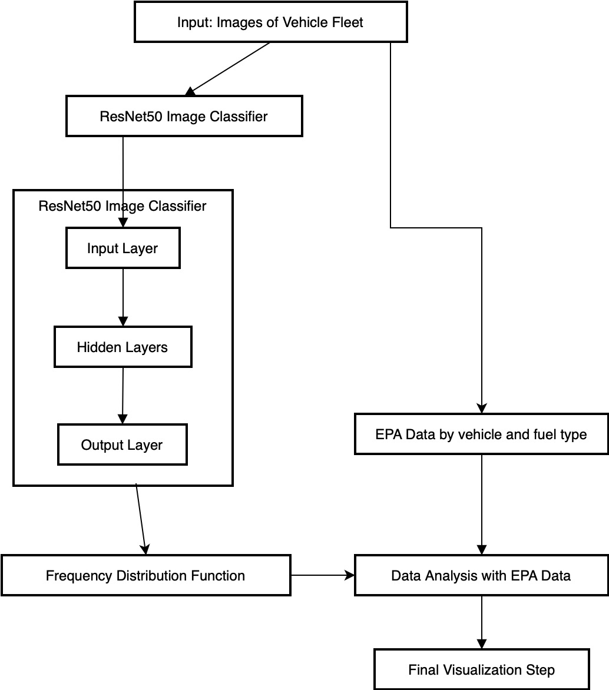
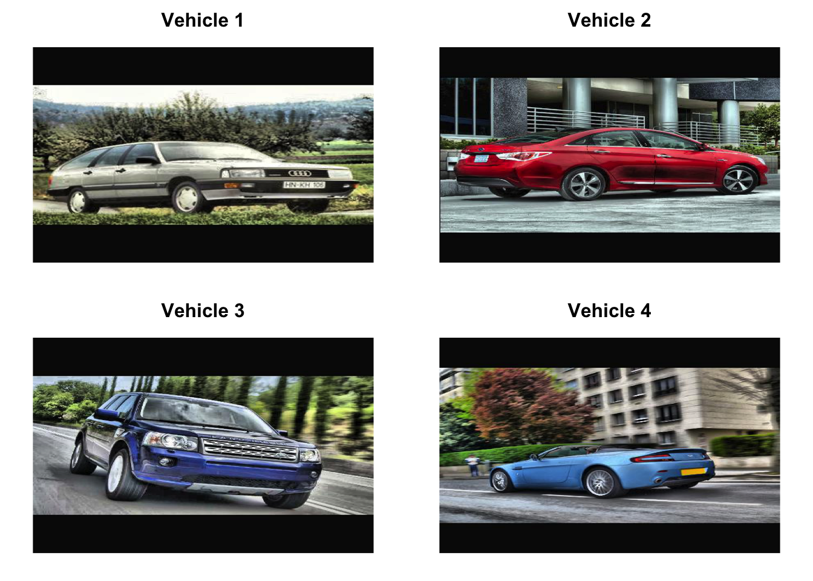
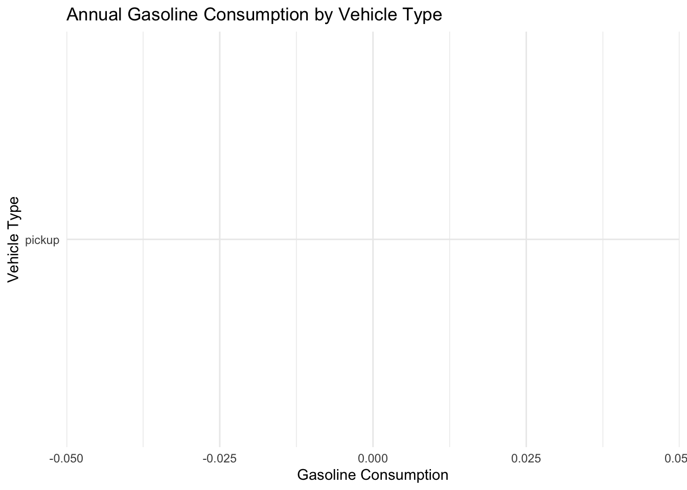
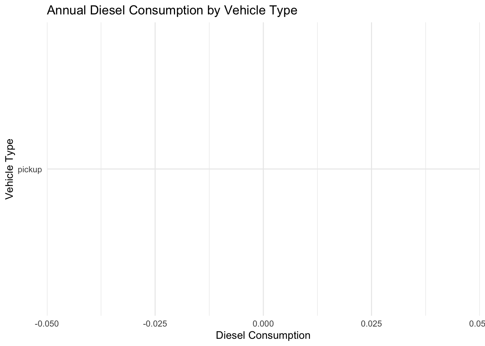
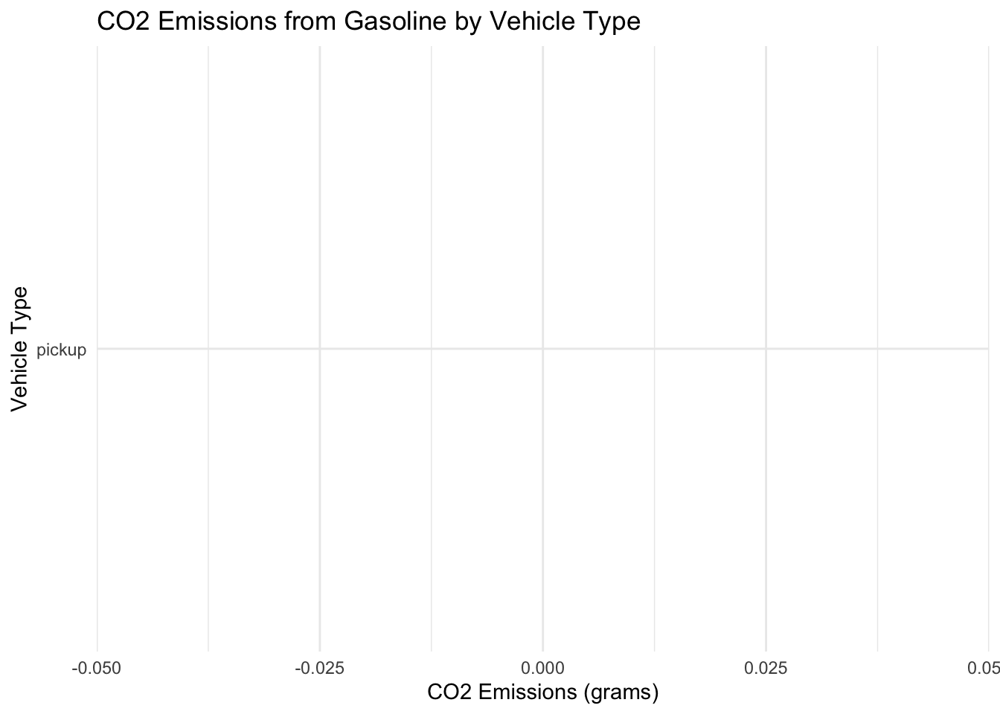
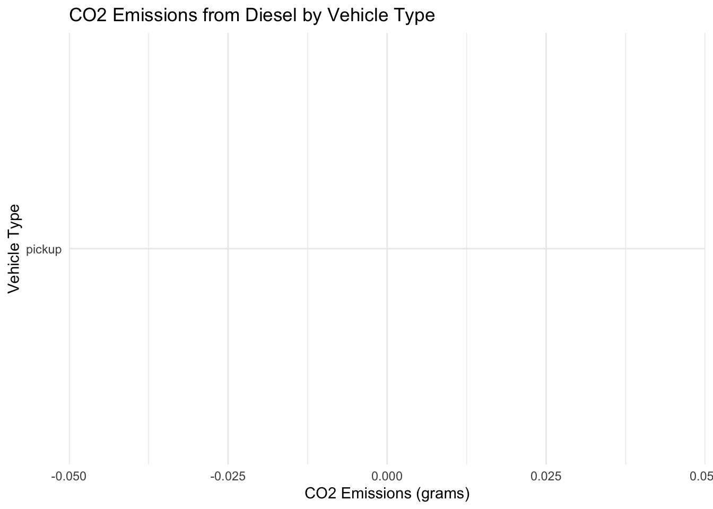
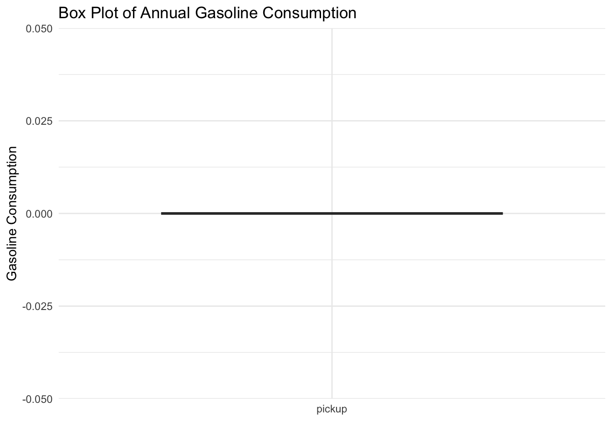
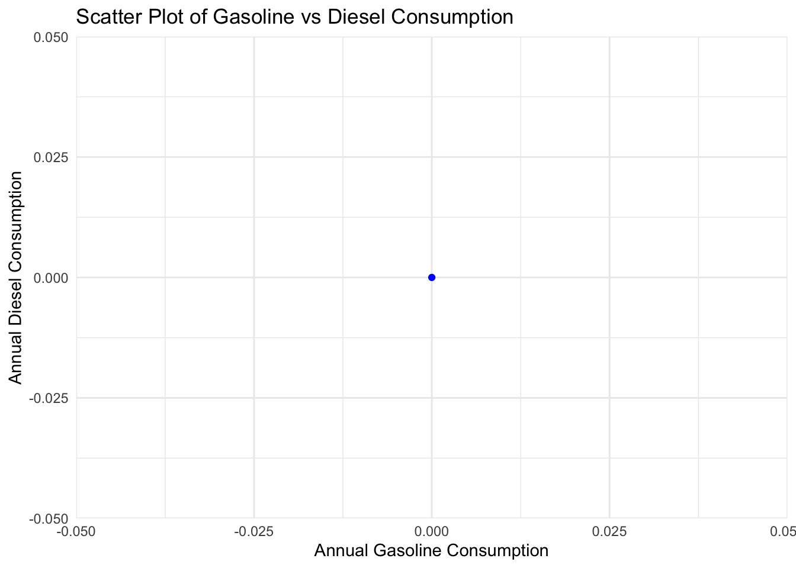
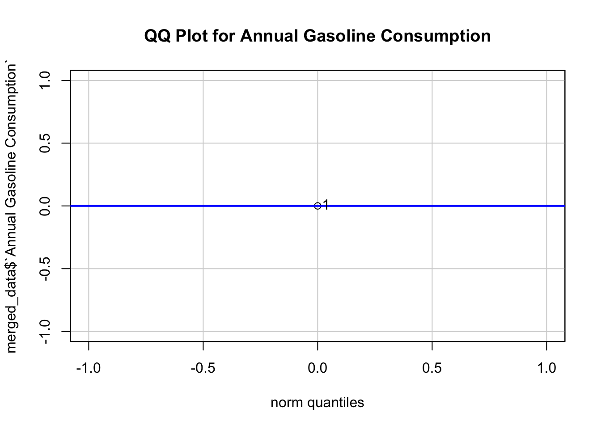
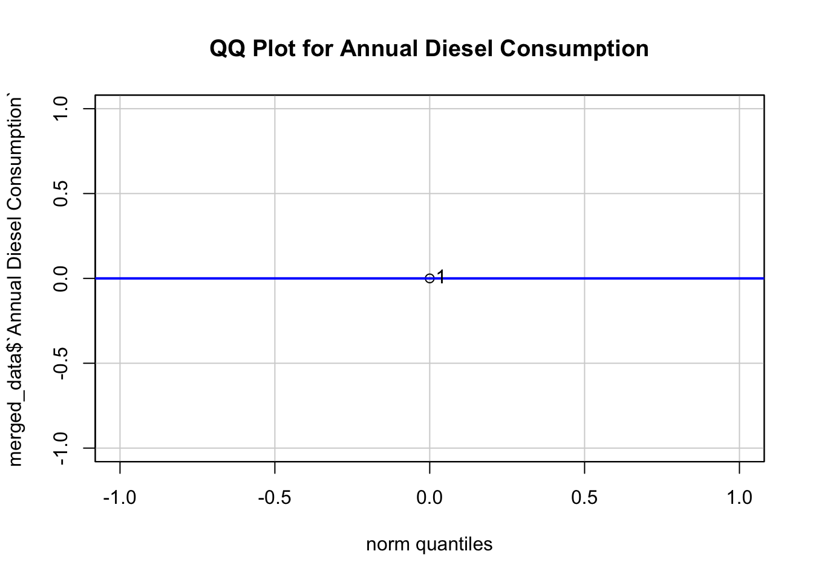

Vehicle Fleet Fuel Economy Analysis using DNN - Data-exercise
Introduction
The primary objective of this assignment is to analyze images of a fleet of vehicles to quantify the fuel consumption and greenhouse gas (GHG) footprint of the fleet, both as a whole and categorized by vehicle type.
To achieve this, we utilized the ResNet50 image classifier, a pretrained open-source deep neural network, to process a set of 50 images representing the vehicle fleet. The ResNet50 model, deployed in TensorFlow, identified the type of vehicle in each image. This data was then used to create a frequency distribution table for the vehicle types present in the dataset. We combined this data with fuel economy figures from the Environmental Protection Agency (EPA). The resulting analysis allowed us to calculate the fuel consumption and GHG footprint of the fleet, broken down by vehicle and fuel types. Figure shows the flowchart of the overall process implemented in the project :

Libraries and Setup:
Several libraries are loaded at the beginning primarily tensorflow and keras for image classification and ggplot for visualization:
── Attaching core tidyverse packages ──────────────────────── tidyverse 2.0.0 ──
✔ dplyr 1.1.2 ✔ readr 2.1.4
✔ forcats 1.0.0 ✔ stringr 1.5.0
✔ ggplot2 3.4.3 ✔ tibble 3.2.1
✔ lubridate 1.9.2 ✔ tidyr 1.3.0
✔ purrr 1.0.2
── Conflicts ────────────────────────────────────────── tidyverse_conflicts() ──
✖ dplyr::filter() masks stats::filter()
✖ dplyr::lag() masks stats::lag()
ℹ Use the conflicted package (<http://conflicted.r-lib.org/>) to force all conflicts to become errors
library(readxl)library(ggplot2)library(car)
Loading required package: carData
Attaching package: 'car'
The following object is masked from 'package:dplyr':
recode
The following object is masked from 'package:purrr':
some
library(jpeg)
Model Initialization:
A pre-trained ResNet50 model is loaded with weights from ImageNet. Resnet50 was chosen since it provided a good trade off in terms of accuracy vs computational speed
model <-application_resnet50(weights ='imagenet')
Image Directory and Object Count Initialization:
The directory containing car images and an empty list to store object counts are specified. Train contains 50 images of cars. Some sample images are plotted here :
img_dir <-'train3'
object_counts <-list()
img_dir2 <- here::here("data-exercise","train3")# List all files in the directoryall_files <-list.files(img_dir, pattern ="\\.jpg$|\\.jpeg$|\\.png$", full.names =TRUE)# Select four random image filesset.seed(123) # For reproducibilityrandom_images <-sample(all_files, 4)# Initialize counter for vehicle labelsvehicle_counter <-1# Plot the images in a 2x2 gridpar(mfrow =c(2, 2), mar =c(1, 1, 2, 1))for (img_path in random_images) {# Read the image img <-readJPEG(img_path)# Plot the imageplot(1:2, type ='n', main =paste("Vehicle", vehicle_counter), xlab ="", ylab ="", axes =FALSE)rasterImage(img, 1, 1, 2, 2)# Increment the counter vehicle_counter <- vehicle_counter +1}

Image Processing Function:
A function to process each image, make predictions, and decode the results is defined:
# Filter out objects with count less than 4filtered_object_counts <- object_counts[sapply(object_counts, function(x) x >2)]# Print the counts of each type of animalfiltered_object_counts
Categories are mapped to the recognized objects and merged with the fuel economy data:
categories <-c('beach_wagon'='Passenger Vehicle','cab'='Service Vehicle','car_wheel'='Passenger Vehicle','convertible'='Performance Vehicle','limousine'='Service Vehicle','minivan'='Passenger Vehicle','pickup'='Utility Vehicle','sports_car'='Performance Vehicle')# Create DataFrame from filtered_object_countsvehicle_counts_df <-data.frame(`Vehicle Type`=names(filtered_object_counts),Count =unlist(filtered_object_counts))vehicle_counts_df$Category <-sapply(vehicle_counts_df$`Vehicle.Type`, function(x) categories[[x]])# Map categories to types in the existing datasetexcel_categories <-list('Passenger Vehicle'=c('Car'),'Service Vehicle'=c('Transit Bus'),'Performance Vehicle'=c('Car'),'Utility Vehicle'=c('Delivery Truck'))# Matching categories to typesvehicle_counts_df$`Excel Match`<-sapply(vehicle_counts_df$Category, function(x) excel_categories[[x]][1])# Merge with fuel economy datamerged_data <-merge(vehicle_counts_df, data_clean, by.x ='Excel Match', by.y ='Vehicle Type', all.x =TRUE)# Calculate annual fuel consumption and emissionsmerged_data$`Annual Gasoline Consumption`<- (20000/ merged_data$`mpg Gasoline`) * merged_data$Countmerged_data$`Annual Diesel Consumption`<- (20000/ merged_data$`mpg Diesel`) * merged_data$CountCO2_per_gallon_gasoline <-8887# grams of CO2 per gallon for gasolineCO2_per_gallon_diesel <-10180# grams of CO2 per gallon for dieselmerged_data$`CO2 Emissions Gasoline (grams)`<- merged_data$`Annual Gasoline Consumption`* CO2_per_gallon_gasolinemerged_data$`CO2 Emissions Diesel (grams)`<- merged_data$`Annual Diesel Consumption`* CO2_per_gallon_diesel
Visualization of Fuel Consumption and Emissions:
Several bar plots visualize annual fuel consumption and CO2 emissions by vehicle type:
# Annual Gasoline and Diesel Consumption by Vehicle Typeggplot(merged_data, aes(x =reorder(`Vehicle.Type`, `Annual Gasoline Consumption`), y =`Annual Gasoline Consumption`)) +geom_bar(stat ='identity', fill ='blue') +coord_flip() +labs(title ='Annual Gasoline Consumption by Vehicle Type', x ='Vehicle Type', y ='Gasoline Consumption') +theme_minimal()

ggplot(merged_data, aes(x =reorder(`Vehicle.Type`, `Annual Diesel Consumption`), y =`Annual Diesel Consumption`)) +geom_bar(stat ='identity', fill ='green') +coord_flip() +labs(title ='Annual Diesel Consumption by Vehicle Type', x ='Vehicle Type', y ='Diesel Consumption') +theme_minimal()

# CO2 Emissions from Gasoline and Diesel by Vehicle Typeggplot(merged_data, aes(x =reorder(`Vehicle.Type`, `CO2 Emissions Gasoline (grams)`), y =`CO2 Emissions Gasoline (grams)`)) +geom_bar(stat ='identity', fill ='red') +coord_flip() +labs(title ='CO2 Emissions from Gasoline by Vehicle Type', x ='Vehicle Type', y ='CO2 Emissions (grams)') +theme_minimal()

ggplot(merged_data, aes(x =reorder(`Vehicle.Type`, `CO2 Emissions Diesel (grams)`), y =`CO2 Emissions Diesel (grams)`)) +geom_bar(stat ='identity', fill ='brown') +coord_flip() +labs(title ='CO2 Emissions from Diesel by Vehicle Type', x ='Vehicle Type', y ='CO2 Emissions (grams)') +theme_minimal()

Additional Analysis:
Box plots, summary statistics, and scatter plots provide further insights into the fuel economy and GHG emmissions of the given fleet of vehicles by fuel type and vehicle type:
# Box Plot of Annual Gasoline Consumptionggplot(merged_data, aes(x = Vehicle.Type, y =`Annual Gasoline Consumption`)) +geom_boxplot() +labs(title ='Box Plot of Annual Gasoline Consumption', x ='', y ='Gasoline Consumption') +theme_minimal()

# Summary statistics for gasoline and diesel consumptionsummary(merged_data$`Annual Gasoline Consumption`)
Min. 1st Qu. Median Mean 3rd Qu. Max.
3279 4303 8329 9906 16211 17701
summary(merged_data$`Annual Diesel Consumption`)
Min. 1st Qu. Median Mean 3rd Qu. Max.
2902 3808 7371 8767 14347 15666
# Scatter Plot of Gasoline vs Diesel Consumptionggplot(merged_data, aes(x =`Annual Gasoline Consumption`, y =`Annual Diesel Consumption`)) +geom_point(color ='blue') +labs(title ='Scatter Plot of Gasoline vs Diesel Consumption', x ='Annual Gasoline Consumption', y ='Annual Diesel Consumption') +theme_minimal()

QQ Plot for Normality Check:
A QQ plot is used to check the normality of the annual gasoline consumption:
# QQ Plot for Annual Gasoline ConsumptionqqPlot(merged_data$`Annual Gasoline Consumption`, main ="QQ Plot for Annual Gasoline Consumption")

[1] 5 6
qqPlot(merged_data$`Annual Diesel Consumption`, main ="QQ Plot for Annual Diesel Consumption")

[1] 5 6
Conclusion
Based on the analysis, we can conclude that commercial vehicles and pickup trucks have up to 50% higher fuel consumption and greenhouse gas (GHG) emissions compared to cars. The visualizations support this by showing that limousines and cabs have the highest annual gasoline and diesel consumption, followed closely by pickup trucks. The high fuel consumption of commercial vehicles is due to their higher mileage, while pickup trucks have higher fuel consumption due to lower efficiency.
Additionally, the plots indicate that vehicles like sports cars and beach wagons have lower fuel consumption compared to commercial vehicles and pickup trucks. Diesel vehicles within the same category are shown to be more efficient than gasoline vehicles, leading to better fuel economy and relatively lower CO2 emissions. The bar plots for CO2 emissions from gasoline and diesel consumption reinforce the finding that limousines and cabs emit the most CO2, followed by pickup trucks, sports cars, and beach wagons.
The specific insights from the plots are as follows:
Annual Gasoline Consumption: Limousines and cabs show the highest consumption, followed by pickup trucks.
Annual Diesel Consumption: Limousines and cabs again lead in consumption, with pickup trucks also showing significant diesel use.
CO2 Emissions from Gasoline: Limousines and cabs produce the most emissions, followed by pickup trucks and sports cars.
CO2 Emissions from Diesel: Limousines and cabs remain the highest emitters, with pickup trucks and sports cars also contributing significantly.
These findings highlight the higher environmental impact of commercial vehicles and pickup trucks compared to other vehicle types.
We successfully identified vehicle types from the given image data set and quantified their distribution by type using Resnet in tensorflow environment. Additionally, we classified the vehicles based on their fuel type, allowing us to assess the fuel economy of gasoline and diesel vehicles using summary statistics and scatter plots. The EPA data was instrumental in converting frequency distribution data into actual fuel economy figures and GHG emissions. This tool can be further refined to efficiently quantify fuel consumption and related expenses using images of existing vehicle fleets. Its capability to process images also makes it adaptable for analyzing real-time traffic camera data to quantify GHG emissions and pollution levels in urban environments.